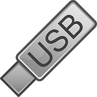
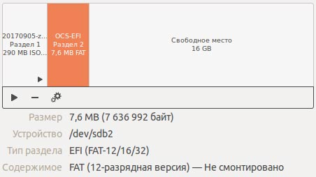
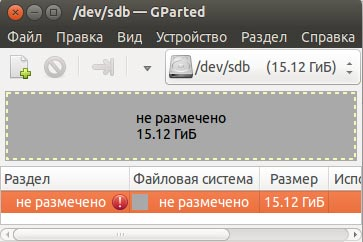
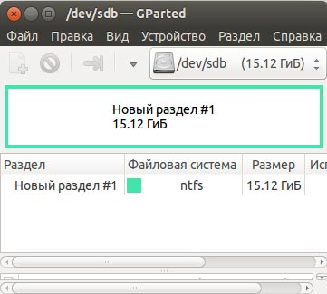

Создать загрузочную флешку (USB диск) в Ubuntu (Linux)
Подробности
Создано: 18 декабря 2017
Обновлено: 25 декабря 2017
Компакт диски отжили свое, гораздо удобнее использовать USB диски (флешки) для записи образов установки операционных систем, реаниматоров, live USB. Сейчас нужна флешка с Windows, через 5 минут с Acronis, а потом с CloneZilla.
Раньше, для создания загрузочных флешек, я пользовался программой Unetbootin, но иногда возникали какие-то "косяки" то меню загрузки, которое создает Unetbootin, зависало, то флешка отформатирована в NTFS, то с разделами флешки что-то не так.
Давно встречал команду linux dd, иногда возникала необходимость ею пользоваться, но для создания загрузочной флешки - никогда. Решил попробовать, команда довольно проста, давайте разберемся.
Создание загрузочной флешки в Ubuntu командой dd
dd (dataset definition) — программа UNIX, предназначенная как для копирования, так и для конвертации файлов. Название унаследовано от оператора DD (Dataset Definition) из языка JCL.
пример команды:
sudo dd bs=4M if=ubuntu-16.04-desktop-amd64.iso of=/dev/sdb
Восстановление размера загрузочной USB флешки (диска)
Полсе использования флешки вы будете удивлены, что для работы на USB диске вам доступно 7Mb или 2Mb. На самом деле, в систему монтируется только один раздел, пример вы можете увидеть на рисунке ниже.
Восстановить флешку вам поможет программа GParted, которая установлена в Ubuntu по умолчанию. Здесь все просто, при запуске GParted заругается на таблицу раздело вашей флешки, предложит ее исправить и не увидит на флешке созданных разделов (но они есть). Вам необходимо:

Разделы на Live-USB

GParted не видит разделов загрузочной флешки

в GParted создали таблицу разделов и новый раздел